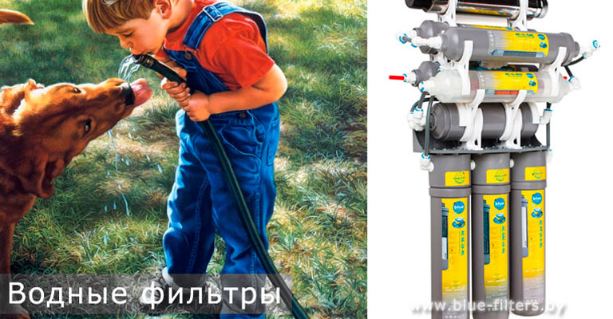

Прошло то время, когда нужно было доказывать и отстаивать точку зрения по поводу влияния воды на жизнь. Теперь все знают, что вода – это основополагающее вещество жизни на Земле.
Человек более чем на 70 % состоит из воды. Уже только это говорит о её важности для организма. В настоящее время человечество, частично от легкомыслия, частично от жажды наживы, всеми мыслимыми и немыслимыми способами загрязняет водные источники. Теперь из наших кранов течет вода, мягко говоря, не соответствующая требованиям наших организмов. Для более безопасного использования водопроводной воды её необходимо очищать, а для этого существуют фильтры.
Снабжением рынка водными фильтрами занимаются множество организаций. Попробуем разобраться, какой фильтр выбрать для конкретного случая. Существует множество видов фильтров, рассмотрим основные: механические, сетчатые, картриджные и угольные. Рассмотрим их характеристики.
Фильтры механические
Свое название эти фильтры получили от назначения. Они борются с взвешенными механическими примесями в воде, и представляют собой сетку. Сетка может принимать форму цилиндра или вставки для водопровода в форме рогатки. Найти их можно в любом профильном магазине или отделе. Минимальные размеры сеточных пор составляют полмиллиметра.
Роль этих фильтров защищать водопроводные устройства: счетчики воды, смесители, краны, клапана от попадания в них крупных механических частиц. Это предохраняет приборы и увеличивает срок службы.
Совет
Фильтры нужно покупать корпусные. Корпус должен быть пластиковым или латунным. Обязательно поинтересуйтесь о материале, из которого изготовлена сетка.
Кроме обычных механических фильтров существуют фильтры снабженные магнитом. Они так и называются «магнитно-механические» фильтры. Такие фильтры являются прекрасным барьером для металлических частиц, но пластиковые, керамические частицы, а также диамагнетики его не боятся.
Самопромывные фильтры.
Название говорит само за себя. Благодаря вмонтированным кранам или клапанам такие фильтры могут очищаться сами. Цилиндрическая сетка избавляется от грязи с помощью потока воды, проходящего через открытый клапан или кран. Такие фильтры призваны производить первичную очистку.
Самоочищающие фильтры, в основном, снабжаются нержавеющими сетчатыми фильтрующими элементами. Материалом для них служат нержавейка или полиамид.
Для того, чтобы фильтры были на «самообслуживании», их нужно снабдить специальным блоком автоматики, который сможет следить за открытием и закрытием промывающих элементов через установленное время. Такой способностью обладает подавляющее большинство фильтров этого типа.
Патронные или картриджные фильтры.
Конструкция таких фильтров предусматривает установку непосредственно в водопроводную трубу. Для обслуживания такой фильтр снабжается съемной колбой и одним или несколькими фильтрами-картриджами.
Фильтры для очистки можно устанавливать как в трубы холодной, так и горячей воды. Разница только в материале съемной колбы. Для горячей воды – колба изготавливается из нержавейки. Может применяться и термостойкий пластик. С холодной проще – колба из обычного пластика. Лучше приобретать с прозрачной колбой, проще судить о загрязнении картриджа.
Помните, если фильтр служит только для очистки питьевой воды – картридж нужно менять не позднее двух месяцев с начала его работы.
Фильтры угольные.
Такие фильтры заставляют воду пройти через угольный порошок. Так называемый активированный уголь получают из каменного или древесного угля. Но, как показывает практика, лучшим экспертом в очистке показал себя фильтр с углём из кокосового ореха.
Применением таких фильтров достигается избавление питьевой воды от запахов и посторонних вкусов. Ими также убираются некоторые радиоактивные элементы и тяжелые металлы.
Для более надёжной и длительной работы такого фильтра рекомендуется устанавливать перед ним механический фильтр, который сможет уберечь угольный фильтр от попадания крупных механических частиц.
Это ещё далеко не все, что можно сказать о водных фильтрах. Однако даже данная информация поможет Вам лучше ориентироваться в этих приборах.
Телефоны для консультации, заказа фильтра или станции водоподготовки, выезда специалистов на дом для анализа качества питьевой воды: